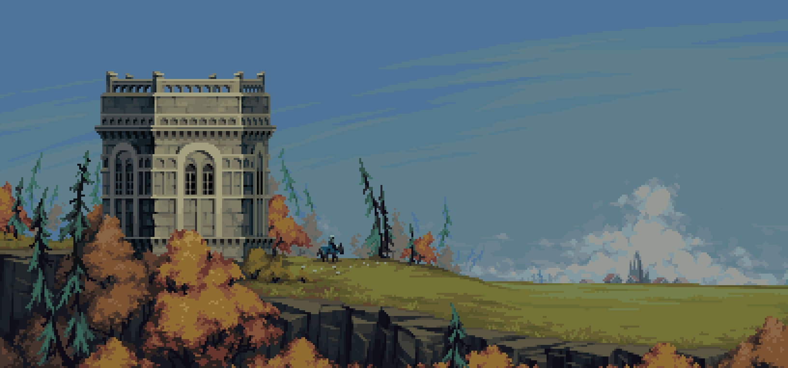

- 


Пиксельные игры - это то, с чего компьютерные игры и начинались. В прошлом это было единственным техническим решением. Но и в наше время, несмотря на проекты практически с гиперреалистичной графикой, игры в пиксельном стиле ежегодно остаются в сердцах у людей. Давайте же ознакомимся с некоторыми их современными представителями.